Del medidor a la caja, sin papeles y sin planillas.
Cooperativa de Agua, Energía y Otros Servicios Comunitarios de Dos de Mayo Ltda.
Versión de demostración, con datos de prueba. Para la gerencia y el personal de la cooperativa.
Contenido
Qué vas a encontrar
Este manual explica cómo funciona CoopGestión: qué hay en cada sección, quién puede hacer cada cosa y por dónde se empieza. El paso a paso de cada pantalla lo da Solvix dentro de la app, con sus tutoriales.
Qué es CoopGestiónPara qué sirve y qué tiene cargado
Cómo entrarSocios, personal y usuarios de la demostración
Quién ve quéLos roles y sus pantallas
El portal del socioDeuda, facturas, pago, consumo y reclamos
Lecturas en la calleEl celular del operario y el control en la oficina
FacturaciónDel cierre de lecturas a la emisión
CajaCobrar en el mostrador y cerrar con arqueo
Reclamos y cortes programadosDel aviso del vecino a la cuadrilla
Tablero e informesLos números del mes y las planillas
MapaDeuda, lecturas en vivo y áreas
Padrón, tarifas y la cooperativaSocios, precios, usuarios e imagen
Solvix y los tutorialesLa ayuda dentro de la app
Cuidado de los datosPermisos, auditoría y sesiones
Qué es de prueba en esta versiónLo simulado y lo que falta
Preguntas frecuentesLo que más se consulta
Anexo: usuarios de la demostraciónCon qué datos entrar a probar
1
Qué es CoopGestión
Es una plataforma web para cooperativas de servicios públicos. Junta en un solo lugar lo que hoy está repartido entre el sistema de facturación, las planillas, el papel del lecturista y la caja.
Se usa desde el navegador de la computadora o del celular, sin instalar nada. Cada persona entra y ve solo lo suyo: el vecino consulta y paga, el lecturista carga lecturas en la calle, la caja cobra, facturación emite y gerencia mira el resultado.
Para el socio
Cuánto debe, sus facturas con la explicación de cada importe, el pago desde el celular, su consumo y sus reclamos.
Para el operario
Su ruta del día, una casa por pantalla, teclado grande y funcionamiento sin señal.
Para la oficina
Control de lecturas, facturación en cuatro pasos, caja con arqueo, reclamos y cortes programados.
Para la gerencia
Tablero del mes, balance de energía, informes para bajar y el mapa con la deuda casa por casa.
El circuito de un mes
Lectura→Control→Facturación→Cobro→Tablero
Lo que carga el operario llega solo a la oficina. La oficina controla, calcula las pre-facturas, revisa las que llaman la atención y emite. El socio ve su factura en el momento y la paga desde el celular o en el mostrador. Todo eso aparece en el tablero y en el mapa.
Lo que tiene cargado esta versión
Dato
Detalle
2.000 conexiones y 1.864 socios
Padrón de prueba sobre las calles reales de Dos de Mayo: 6 zonas urbanas y 4 rurales, cada una con su ruta de lectura.
Servicios
Energía, agua, internet, TV, sepelio y gas envasado.
12 meses de historia
Lecturas, unas 49.000 facturas y 21.000 pagos, para que el tablero y el consumo tengan qué mostrar.
El mes en curso
A medio leer (cerca del 85 %), listo para controlar, facturar y cobrar durante la demostración.
Reclamos y cortes
60 reclamos con su historial y cortes programados para los próximos días.
Tarifas
La estructura sale de dos facturas de la cooperativa. Hay valores ilustrativos: se confirman al cargar los cuadros vigentes.
Todas las personas son inventadas. Nombres, documentos, teléfonos, deudas y consumos son de prueba. Lo único real son las calles y la estructura de las tarifas.
2
Cómo entrar
La pantalla de ingreso tiene dos entradas: una para el socio y otra para quien trabaja en la cooperativa. La app recuerda cuál usaste la última vez.
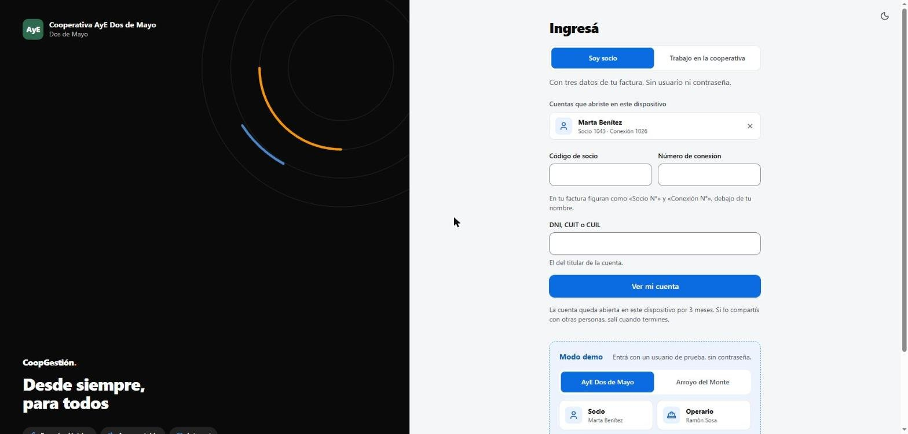
La pantalla de ingreso, con la cuenta que ya se abrió en ese dispositivo.
Soy socio
El socio no tiene usuario ni contraseña. Entra con tres datos que están en su factura, igual que en la consulta que la cooperativa ya usa:
Código de socio (en la factura, «Socio N°»).
Número de conexión («Conexión N°», debajo del nombre).
DNI, CUIT o CUIL del titular. Se puede escribir con o sin puntos y guiones, y vale el CUIL de quien figura con DNI.
La cuenta queda abierta 3 meses en ese celular o computadora. Cada vez que se usa, el plazo vuelve a contar.
Salir: tocando el círculo con las iniciales, arriba a la derecha, y «Salir».
Ver otra cuenta: en ese mismo menú. Sirve para mirar la cuenta de un familiar o la del negocio desde el mismo dispositivo.
Las cuentas que ya se abrieron quedan en la pantalla de ingreso: se toca el nombre y solo falta escribir el documento. Se guardan el nombre, el código de socio y la conexión; el documento no se guarda nunca. Con la «×» se quitan.
En un dispositivo compartido, conviene salir al terminar: la cuenta queda abierta para quien lo use después.
Trabajo en la cooperativa
El personal entra con su email y su contraseña. La sesión dura 30 días sin usarse. Después de varios intentos fallidos seguidos, el ingreso se frena unos minutos.
Modo demo
Mientras la plataforma está en demostración, la pantalla de ingreso muestra botones para entrar como cada rol sin escribir nada, y un selector para cambiar a la segunda cooperativa de ejemplo. Los datos para entrar a mano están en el anexo.
Tenerla como una app
Android (Chrome): menú ⋮ → Agregar a la pantalla principal.
iPhone (Safari): botón Compartir → Agregar a inicio.
Esto funciona cuando la plataforma está publicada en internet. En la demostración local se muestra desde el navegador de la computadora.
3
Quién ve qué
Cada persona ve las secciones de su rol. Los permisos se controlan en el servidor: esconder un botón no es la protección, es solo la comodidad.
Rol
Para quién es
Qué hace
Socio
Cada vecino con un servicio.
Ve y paga sus facturas, mira su consumo, reclama y actualiza sus datos de contacto.
Operario
Lecturistas y cuadrillas.
Carga las lecturas de sus rutas desde el celular.
Caja
Quien atiende el mostrador.
Abre su caja, cobra, imprime recibos y cierra con arqueo. Consulta el padrón.
Facturación
El área que emite.
Controla lecturas, pre-factura, revisa y emite. Consulta tarifas, informes y mapa.
Gerencia
Gerencia y presidencia.
Tablero, informes y mapa. Mira facturación, caja y reclamos. Cambia la imagen de la cooperativa.
Administración
Quien administra el sistema.
Todo lo anterior, y además cambia tarifas, atiende reclamos, carga cortes, anula cobros y ve los usuarios.
Pantalla por pantalla
Sección
Caja
Facturación
Gerencia
Administración
Tablero
—
—
Sí
Sí
Mapa
—
Sí
Sí
Sí
Padrón
Sí
Sí
Sí
Sí
Tarifas
—
Mira
Mira
Cambia
Lecturas
—
Sí
Sí
Sí
Facturación
—
Opera
Mira
Opera
Caja
Cobra
—
Mira
Cobra
Reclamos
—
—
Mira
Atiende
Informes
—
Sí
Sí
Sí
Usuarios
—
—
—
Sí
Cooperativa (imagen)
—
—
Sí
Sí
Una persona puede tener más de un rol. En ese caso, el menú de su usuario le deja pasar de un área a otra.
Si no ves algo que necesitás: es por el rol, no un error. Lo resuelve administración.
4
El portal del socio
Pensado primero para el celular y para gente mayor: letra grande, botones grandes, cuatro secciones y nunca más de dos pantallas de profundidad.
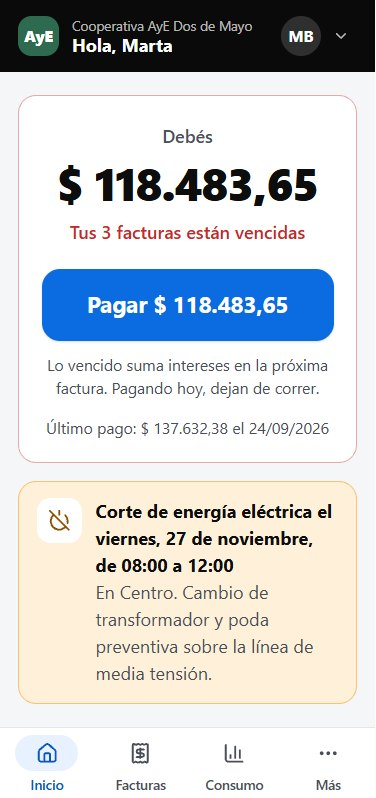
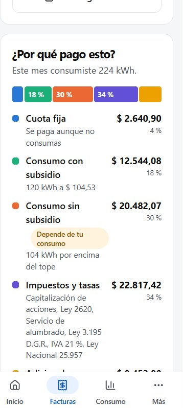
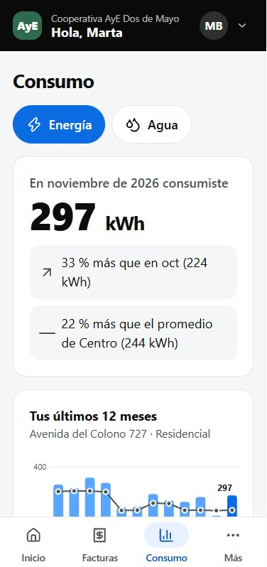
Inicio, la explicación de una factura y el consumo (datos de prueba).
Inicio
Dice en grande cuánto debe o que está al día, con el botón para pagar. Debajo aparecen los cortes programados en su zona y sus reclamos en curso.
Facturas
Todas las facturas de todos sus servicios, con su estado y el PDF para descargar. Cada una tiene «¿Por qué pago esto?»: una barra que muestra en qué se va la plata (cuota fija, consumo con subsidio, consumo sin subsidio, impuestos, adicionales e intereses) y frases cortas que lo explican, por ejemplo cuánto consumió por encima del tope subsidiado.
Pagar
Toca Pagar y elige qué facturas quiere pagar.
Ve el total exacto en el botón, antes de confirmar.
Pasa por la pasarela del banco y vuelve con el recibo y con lo que le queda por pagar.
También se puede pagar con el QR de la factura de papel, sin entrar a ninguna cuenta: muestra solo lo justo para reconocer la factura, sin nombres ni domicilios.
Consumo
Los últimos 12 meses de energía y agua, comparados con el mes anterior y con el promedio de su zona.
Más
Reclamos: avisa un problema en pocos toques, con foto y ubicación, y sigue cómo va.
Mis pagos: sus recibos, para descargar.
Mis conexiones: sus domicilios, servicios y medidores.
Sepelio: las personas adheridas a su servicio.
Mis datos: su email, su celular y la adhesión a la factura digital.
Tutoriales: «Primeros pasos», «Ver y pagar tus facturas» y «Consumo, reclamos y otras cuentas».
5
Lecturas en la calle
El operario trabaja con su celular: una casa por pantalla, botones grandes, se usa con una mano. Si no hay señal, no se pierde nada.
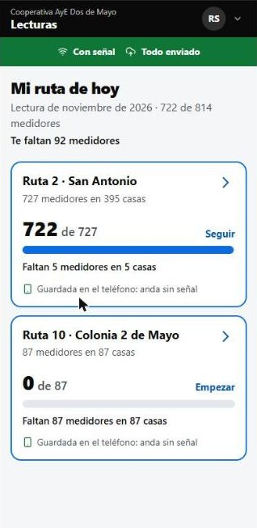
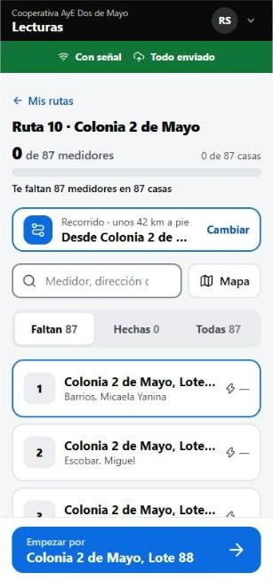
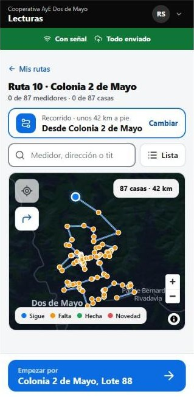
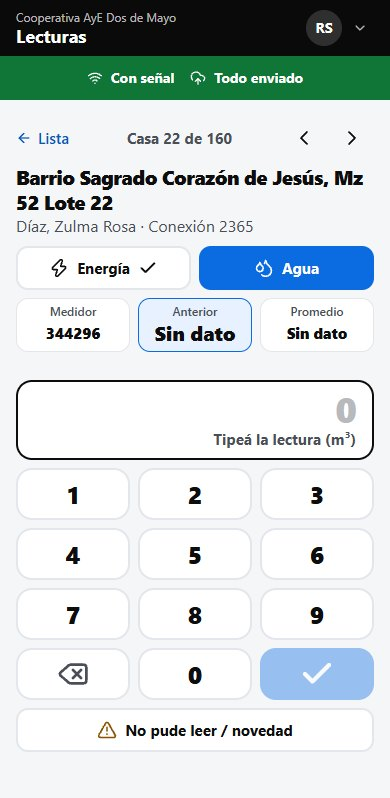
«Mi ruta de hoy», una ruta con su recorrido, el recorrido en el mapa y la carga de una lectura.
En el celular
Mi ruta de hoy: sus rutas, con cuántos medidores lleva y cuántos le faltan. Son las mismas cuentas que ve la oficina. Toca una y sigue donde quedó.
Recorrido: las casas vienen en el orden que cargó la oficina. Tocando «Recorrido», el operario le dice a la app de dónde sale —de donde está parado, de una calle o de una casa— y la app ordena lo que falta para caminar menos. Antes de aceptarlo ve cuántos kilómetros son y cuánto se ahorra. Puede pedir que termine cerca de donde empieza, y volver al orden de la oficina cuando quiera.
Mapa de la ruta: dibuja el recorrido que falta con el número de paso de cada casa, marca cuál sigue y a cuántos metros está, y cuántas casas y kilómetros quedan.
Una casa por pantalla: dirección, titular, medidor, lectura anterior y consumo promedio. Al confirmar, pasa sola al otro medidor de la casa o a la casa siguiente.
Avisos en el momento: si la lectura es menor a la anterior, pide elegir entre vuelta de contador o cambio de medidor. Si el consumo da mucho más alto o mucho más bajo que lo habitual, pide confirmar y sacar una foto.
«No pude leer / novedad»: medidor roto, sin acceso, perro, casa cerrada, posible fraude o pérdida visible, con foto y nota.
Búsqueda por medidor, dirección o titular.
El recorrido es en línea recta. La app no conoce los arroyos, los alambrados ni el sentido de las calles: da un buen orden para caminar, no el camino exacto. El operario siempre puede abrir la casa que quiera.
Sin señal
La barra de arriba dice siempre si hay señal y cuántas lecturas faltan enviar. Sin señal, cada lectura se guarda en el teléfono y sale sola cuando vuelve la conexión. Reintentar nunca duplica una lectura.
En la oficina
La sección Lecturas muestra el avance por ruta, que se actualiza solo: medidores leídos, casas terminadas y lo que falta. Desde ahí se revisan las lecturas que llamaron la atención, se ven las novedades con su foto y se estiman los medidores sin leer con el promedio de seis meses.
Para pasarle una ruta a otro operario se elige su nombre en la lista. Al lado de cada nombre figura cuánto tiene a cargo («2 rutas, le faltan 92 medidores»), que es lo que esa persona ve en su teléfono. La ruta le aparece sola, con lo que ya estaba leído, y deja de aparecerle al anterior.
Tutorial: «Cargar lecturas en la calle».
6
Facturación
Un asistente de cuatro pasos, uno por decisión. Nada se emite a ciegas: primero la pre-factura, después lo raro, después todo junto.
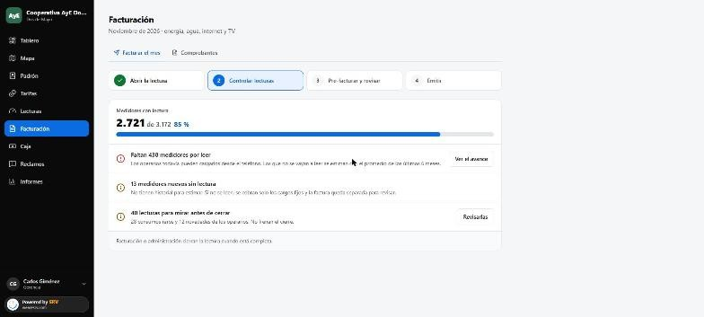
El paso «Controlar lecturas» del asistente.
Paso
Qué se hace
1. Abrir la lectura
Se abre el mes (energía y agua juntas) y las rutas aparecen en el teléfono de los operarios.
2. Controlar lecturas
Cuántos medidores faltan, cuáles dieron menos que la anterior sin aclarar y qué quedó sin revisar. Lo que falta se puede estimar de una vez. No deja cerrar con medidores sin resolver.
3. Pre-facturar y revisar
Se calcula la factura de cada servicio de cada conexión, todavía sin número. El sistema separa las raras: las que cambiaron más del 50 % contra el mes anterior, las de importe cero y las de medidores sin lectura. Se abren una por una, con el cálculo renglón por renglón.
4. Emitir
Cada factura toma su número, su fecha y su vencimiento. La deuda queda cargada y el socio la ve en el momento.
Reglas que conviene conocer
Una factura emitida no se edita. Si estuvo mal, se anula con una nota de crédito por el total (solo si no tiene pagos), y queda registrado quién lo hizo.
Numeración correlativa, sin huecos, por tipo de comprobante, letra y punto de venta.
Mora: una factura vencida e impaga suma su interés en la factura siguiente del mismo servicio. En la caja no se cobra recargo: se cobra lo que dice la factura.
Si la emisión se corta, se vuelve a tocar «Emitir» y sigue desde donde quedó, sin repetir ni saltear números.
El PDF tiene el mismo formato que la factura de papel: lecturas, gráfico de consumo, detalle del cálculo, código de barras y QR.
En la pestaña Comprobantes se busca cualquier factura, se ve su detalle y los pagos que recibió.
Tutorial: «Facturar el mes».
7
Caja
Pensada para usarse sin el mouse: búsqueda, cobro, vuelto y recibo en segundos. Al cerrar, el arqueo sale solo.
Abrir la caja con el efectivo que hay en el cajón (fondo inicial). Hay una sola abierta por cajero.
Buscar en un solo campo: nombre, documento, número de socio, de conexión o de medidor, o el código de barras de la factura con el lector.
Cobrar: llega todo lo que debe ya marcado, de lo más viejo a lo más nuevo. Se escribe con cuánto paga y aparece el vuelto. Para un pago parcial se escribe el importe y se aplica desde la factura más vieja.
Recibo: queda listo para imprimir, en ticket de 80 mm o en A4.
Cerrar con arqueo: el sistema dice cuánto efectivo tiene que haber y se carga lo contado. Si no coincide, hay que escribir qué pasó; la diferencia queda guardada.
Atajos del teclado
Tecla
Qué hace
F2
Vuelve al buscador y arranca un cobro nuevo.
↑↓Enter
Elegir un socio de la lista y abrirlo.
TabEspacio
Moverse entre las facturas y marcarlas o desmarcarlas.
ETDCQ
Medio de pago: efectivo, transferencia, débito, crédito, QR.
G
Abrir o cerrar «Gas y otros conceptos».
Enter
Cobrar. Después del cobro, pasar al siguiente.
F4
Venta de mostrador a alguien que no es socio.
Esc
Cancelar el cobro.
Lo que protege la plata
Nada se cobra dos veces: si dos cajeros cobran la misma factura a la vez, cobra uno y al otro le avisa. Un doble Enter devuelve el mismo recibo.
Los cobros no se editan ni se borran. Anular un cobro lo puede hacer solo administración, con motivo: las facturas vuelven a deberse y todo queda en la auditoría.
Gerencia ve las cajas de cada cajero, con sus cobros y su arqueo, sin poder cobrar.
Tutorial: «Cobrar en el mostrador».
8
Reclamos y cortes programados
El vecino avisa desde su celular y sigue el reclamo paso a paso. La oficina ve primero lo urgente y lo más viejo.
El reclamo del socio
Elige el servicio, cuenta qué pasa con sus palabras, suma una foto y su ubicación. Cuando corresponde, antes de enviar recibe un consejo («fijate si saltó la llave térmica»). Después ve cada paso que la cooperativa deja visible, sin los nombres del personal.
La oficina
Toma reclamos por teléfono o en el mostrador, a nombre del socio.
Asigna la cuadrilla, lo marca en curso y lo resuelve contando qué se hizo.
Cada paso queda en el historial y genera un aviso para el socio.
Hay notas internas, que el socio no ve.
Desde un reclamo se puede saltar a esa casa en el mapa.
Cortes programados
Se cargan por zona o para toda la localidad, con día, horario y motivo. El socio de esa zona con ese servicio lo ve en su inicio, y en el mapa aparece el área afectada. Un corte se puede cancelar.
El sistema nunca corta un servicio solo. El informe de cortes sugeridos (socios con dos o más facturas vencidas) es una lista para que decida una persona.
9
Tablero e informes
El tablero muestra un mes. Se elige el mes, el servicio o la zona, y todo lo de abajo se recalcula. Cada número se abre hasta el detalle.
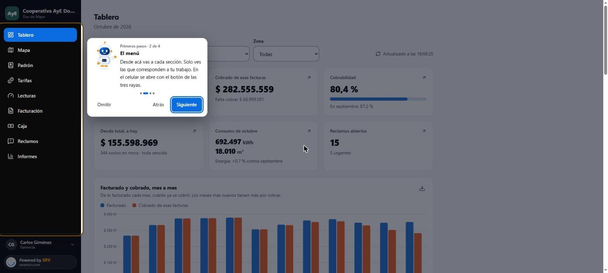
El tablero de gerencia, con Solvix presentando el menú.
Indicador
Qué mide
Facturado
Las facturas emitidas de ese mes.
Cobrado
Lo que ya se cobró de esas facturas, se haya cobrado cuando se haya cobrado.
Cobrabilidad
Cobrado sobre facturado. Los meses más nuevos tienen más por cobrar.
Deuda total
El saldo de todas las facturas impagas, al día de hoy.
Recaudación
La plata que entró en ese mes calendario, por la caja y por el pago online, día por día.
Balance de energía
Lo que entró a la red (comprado y generado) contra lo facturado. La diferencia son las pérdidas. Lo que entró lo carga administración.
Informes
Cada informe se mira en pantalla y se baja en Excel, CSV o PDF. Cada descarga queda en la auditoría.
Informe
Para qué sirve
Deuda por socio
Quién debe, cuánto y desde cuándo, con totales.
Cortes sugeridos
Socios con dos o más facturas vencidas, para decidir a quién se le corta.
Libro de ventas
Los comprobantes emitidos en un período.
Recaudación
Lo cobrado, por día y por medio de pago.
Lecturas
El avance y el resultado de la lectura de un mes.
Consumos por zona
Cuánto consume cada barrio o paraje.
Padrón
Socios, conexiones y servicios.
Tutorial: «El tablero y los informes».
10
Mapa
Dos de Mayo casa por casa, en 3D y con la hora real: de día se ve de día y de noche, con las casas iluminadas.
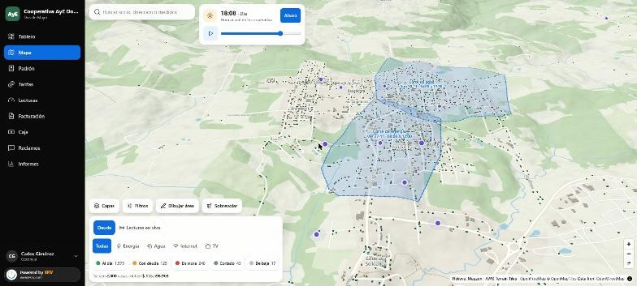
El mapa con la situación de cada conexión y los cortes programados.
Qué se puede mirar
Deuda: cada casa toma un color según cómo está con el servicio elegido:
al día,
con deuda,
en mora (dos o más facturas vencidas),
cortado y
de baja.
Tocando un color de la leyenda, se apaga o se vuelve a prender.
Lecturas en vivo: las casas leídas y las que faltan. Cuando un operario carga una lectura, esa casa cambia a los pocos segundos.
Capas: relieve, zonas, rutas de lectura, reclamos abiertos, cortes programados y mapas de calor de deuda o de consumo.
Filtros: por zona, categoría, ruta y rango de consumo.
Qué se puede hacer
Buscar un socio, una dirección o un medidor.
Tocar una casa para abrir su ficha: titular, servicios, deuda y última lectura. Desde ahí se carga un reclamo para esa casa.
Dibujar un área: se marca un barrio con unos clics y se cierra con doble clic. Muestra cuántas conexiones hay, cuánto deben y cuánto consumen, y deja bajar la lista.
Mover la hora o recorrer el día completo, y sobrevolar el pueblo.
En el celular, la hora y la leyenda arrancan plegadas para dejar el mapa a la vista: se abren con un toque.
El mapa necesita internet: las calles y el relieve se bajan de servidores públicos. El tablero y los informes no lo necesitan.
Tutorial: «El mapa».
11
Padrón, tarifas y la cooperativa
Padrón
Socios, conexiones y servicios. Se busca por nombre, DNI, número de socio, medidor o dirección, y se filtra por zona. La ficha de cada socio reúne sus datos, sus conexiones, sus servicios y sus medidores.
Tarifas
Cuadros tarifarios: cuota fija y escalones por servicio y categoría. Un cuadro no se edita: «Nueva versión» crea otro que rige desde una fecha y cierra el anterior. El historial queda.
Impuestos y cargos: porcentajes, montos fijos o montos por unidad consumida, por servicio, categoría y condición frente al IVA.
Planes y mora: abonos de internet y TV, interés diario, vencimientos y la regla del corte sugerido.
Simulador: arma una factura con las tarifas cargadas, sin guardar nada.
Una tarifa nueva no puede regir desde un mes que ya se facturó. Solo administración cambia tarifas, y cada cambio queda en la auditoría.
Usuarios
Administración ve quién puede entrar al sistema, con qué rol, si está activo y cuándo entró por última vez. Los socios no aparecen como usuarios con contraseña: entran con los datos de su factura.
La imagen de la cooperativa
En Cooperativa, gerencia y administración cargan el logo o una foto de la cooperativa:
Tocar Subir imagen (o Cambiar imagen) y elegir un archivo JPG, PNG o WebP.
La app la recorta en cuadrado, tomando el centro, y muestra cómo va a quedar.
Tocar Guardar.
La imagen aparece en el momento en la pantalla de ingreso y arriba de cada pantalla, para socios y personal. Con Quitar vuelven las iniciales. Cada cambio queda en la auditoría.
Conviene una imagen cuadrada o con lo importante en el centro, porque se muestra chica.
Tutorial: «Padrón, usuarios y reclamos».
12
Solvix y los tutoriales
Solvix es el astronauta de SRV. Vive dentro de la app y muestra dónde tocar para hacer cada cosa, sobre la pantalla real.
Se presenta solo
La primera vez que alguien entra, Solvix hace un recorrido corto: el menú, el usuario y dónde volver a encontrarlo.
Señala y explica
Cada paso lleva a la pantalla que corresponde e ilumina el elemento del que habla.
De a poco
Al terminar un tutorial, ofrece el siguiente que le sirve a ese rol.
Nunca obliga
Se puede omitir en cualquier momento y retomar después. La pantalla se sigue pudiendo usar mientras tanto.
Dónde están
Tocando el usuario (el círculo con las iniciales) → Tutoriales. La lista muestra cuáles hiciste, cuáles omitiste y cuáles son nuevos, con un botón para verlos o repasarlos. El avance se guarda en la cuenta: no se repite la presentación en cada dispositivo. «Empezar de cero» lo borra.
Tutorial
Para quién
Primeros pasos
Todos.
Ver y pagar tus facturas
Socio.
Consumo, reclamos y otras cuentas
Socio.
Cargar lecturas en la calle
Operario.
Cobrar en el mostrador
Caja.
Padrón, usuarios y reclamos
Administración.
El tablero y los informes
Gerencia y administración.
Facturar el mes
Facturación, gerencia y administración.
El mapa
Facturación, gerencia y administración.
Con «reducir movimiento» activado en el celular o la computadora, Solvix se queda quieto.
13
Cuidado de los datos
Cada cooperativa ve solo lo suyo. La plataforma sirve a más de una cooperativa y ninguna consulta cruza de una a otra. Hay una prueba automática que lo verifica.
Los permisos se controlan en el servidor, no en la pantalla.
Auditoría: todo lo que toca plata, tarifas o padrón queda registrado con quién lo hizo y cuándo. También las descargas de informes y los cambios de imagen.
Contraseñas del personal: se guardan cifradas de forma que nadie las puede leer, ni nosotros.
Lo que ve el socio: nunca los nombres del personal ni las notas internas de un reclamo.
Pago con QR: muestra solo lo justo para reconocer la factura, sin nombres ni domicilios.
El ingreso del socio sin contraseña
El socio entra con tres datos que figuran en su factura. Es la misma forma de ingreso que la cooperativa ya usa, y evita que el vecino tenga que crear y recordar una contraseña. Tiene un costo que conviene conocer: quien tenga la factura de otra persona en la mano puede entrar a su cuenta.
Lo que lo acota:
Hacen falta los tres datos juntos, y uno es el documento.
Si algo no coincide, el mensaje es siempre el mismo: no dice qué dato está mal ni si ese socio existe.
Hay un límite de intentos por conexión de internet.
Con ese ingreso se puede ver, pagar, reclamar y cambiar el email y el celular de contacto. No se puede cambiar la titularidad, el domicilio ni los servicios.
Para decidir antes de salir a producción: si la cooperativa prefiere más resguardo, se puede pedir una confirmación adicional solo para cambiar los datos de contacto, sin tocar el ingreso.
14
Qué es de prueba en esta versión
Lo que se ve funciona hoy con datos de prueba. Estas partes están simuladas y se conectan con lo real cuando la cooperativa aporta lo necesario.
Tema
Hoy
Qué hace falta
Datos
Padrón, lecturas, facturas y pagos inventados.
El padrón real y la migración desde el sistema actual (hay que ver en qué formato exporta).
Tarifas
Estructura real, con algunos valores ilustrativos.
Los cuadros vigentes de todas las categorías.
Factura electrónica
Simulada. Los PDF dicen «sin validez fiscal».
El certificado de ARCA de la cooperativa.
Pago online
Pasarela de prueba, que hace de banco y no pide datos de tarjeta.
La documentación técnica y las credenciales de prueba del banco.
Avisos
Quedan guardados; no se envían.
Elegir el servicio de email o WhatsApp.
Energía comprada
Cantidades de ejemplo en el balance.
Las facturas del mayorista y el registro de la usina.
Publicación
Corre en una computadora, en forma local.
Publicarla en internet con https. Recién ahí se prueba en celulares reales: instalarla, usarla sin señal, GPS y cámara.
15
Preguntas frecuentes
¿El socio tiene que registrarse?
No. Entra con el código de socio, el número de conexión y su documento, que están en la factura.
¿Cuánto dura abierta la cuenta del socio?
Tres meses en ese dispositivo, y el plazo se renueva cada vez que la usa. Puede salir cuando quiera.
¿Se puede mirar más de una cuenta desde el mismo celular?
Sí. Con «Ver otra cuenta» se sale de la actual y se entra con los datos de la otra. Las cuentas ya abiertas quedan a un toque.
¿La app le arma el recorrido al operario?
Sí. Le dice de dónde sale (de donde está, de una calle o de una casa) y la app ordena las casas que faltan para caminar menos. Es en línea recta: no conoce lo que no se puede cruzar.
¿Qué pasa si el operario se queda sin señal?
Sigue cargando. Las lecturas se guardan en el teléfono y se envían solas cuando vuelve la conexión.
¿Se puede corregir una factura emitida?
No se edita. Se anula con una nota de crédito y queda registrado.
¿El sistema corta el servicio a quien debe?
Nunca. Arma la lista de cortes sugeridos para que decida una persona.
¿Quién puede anular un cobro?
Solo administración, con motivo. Queda en la auditoría.
¿Quién puede cambiar la imagen de la cooperativa?
Gerencia y administración, desde la sección Cooperativa.
¿Anda en cualquier celular?
Es una página web que se instala como app, sin tienda de aplicaciones. Falta probarla en teléfonos reales, que se hace cuando esté publicada.
¿Tiene modo oscuro?
Sí: claro, oscuro o automático, desde el menú del usuario.
¿Dónde vuelvo a ver los tutoriales?
Tocando tu usuario → Tutoriales.
Una pantalla dice «Esta pantalla tuvo un problema». ¿Qué hago?
Tocá «Volver a cargar». Lo que ya estaba guardado no se pierde.
Anexo
Usuarios de la demostración
Para probar la plataforma como la ve cada persona. Son usuarios de prueba: existen solo mientras el modo demo está encendido.
Lo más rápido
En la pantalla de ingreso, en Modo demo, tocar el botón del rol. Entra sin escribir nada.
El personal, con email y contraseña
En «Trabajo en la cooperativa». La contraseña de todos es demo1234
Rol
Persona
Email
Qué ve al entrar
Operario
Ramón Sosa
operario@dosdemayo.example
Mi ruta de hoy, en formato celular.
Caja
Claudia Wagner
caja@dosdemayo.example
La caja y el padrón.
Facturación
Silvia Rojas
facturacion@dosdemayo.example
El asistente de facturación.
Gerencia
Carlos Giménez
gerencia@dosdemayo.example
El tablero.
Administración
Andrea Lukoski
admin@dosdemayo.example
El tablero, con todas las secciones.
Hay además dos operarios (operario2@ y operario3@, Diego Krause y Luis Ferreyra) y otra cajera (caja2@, Noelia Duarte), con sus propias rutas y su propia caja.
La socia, con los datos de su factura
En «Soy socio». No tiene contraseña.
Persona
Código de socio
Número de conexión
DNI
Marta Benítez
1043
1026
99.658.939
Marta tiene subsidio en la energía, consume por encima del tope y debe facturas: el portal tiene qué explicar y qué pagar.
La segunda cooperativa
Arroyo del Monte es inventada. Sirve para mostrar que cada cooperativa ve su marca y solo sus datos. Se elige en el selector del modo demo.
El personal entra con operario@, caja@, facturacion@, gerencia@ y admin@arroyodelmonte.example, con la misma contraseña.
El socio es Hugo Ayala: socio 1003, conexión 1001, DNI 99.893.830.
Antes de usarla con datos reales, el modo demo se apaga y estos usuarios dejan de poder entrar.